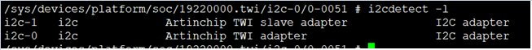
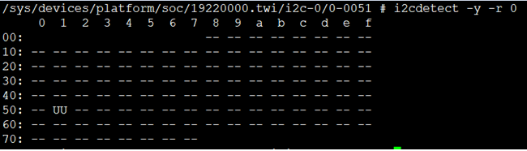
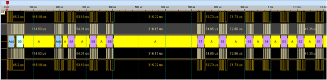

测试指南
测试环境
- 硬件
-
测试板：带有两个 C 接口的测试板
-
PC：用于和测试板交互
-
串口线：连接测试板的调试串口
-
- 软件
-
PC 端串口终端软件
-
i2c-tools 第三方软件包
-
测试配置
将测试板的两个 C，一个配置为 master，一个配置为 slave。两个 C 接口对接。 编译第三方测试工具 tools，利用 tools 提供的工具进行测试。
- i2cdetect
i2cdetect 用于测试系统中有哪些 C 总线，以及 C 总线上有哪些地址被使用
i2cdetect -l ：列出系统中所有的 C 总线

i2cdetect -y -r 0 ：查询 C-0 总线上哪些地址有挂接 I2C 设备。如下如所示，0x51 地址上有挂接 C 设备

- i2cset
i2cset 用于每次向 C 设备写一个字节的数据
i2cset -f -y 0 0x54 1 0x39 ：I2C 从设备地址为 0x54，将从设备中地址 1 处的数据设置为 0x39

- i2cget
i2cget 用于每次从 C 设备读取一个字节的数据
i2cget -f -y 0 0x54 1 ：I2C 从设备地址为 0x54，读取从设备数据地址为 1 处的 1 字节数据

- i2ctransfer
i2ctransfer 用于与 C 设备之间传输数据，每次可读写多个数据
i2ctransfer -f -y 0 w17@0x54 0 0x5a- ：I2C 设备地址为 0x54，向从设备写入 16byte 数据，0 为将要写入数据的起始地址，写入的数据为 0x5a，0x59，0x58…

i2ctransfer -f -y 0 w1@0x54 0 r16 ：I2C 设备地址为 0x54，从 C 设备读取 16byte 数据，读数据的起始地址为 0

- eeprog
eeprog 是读写 eeprom 的工具，每次读写的 message 只有一个字节。若要读写 8 个字节，则会分成 8 个 message 进行读写
eeprog -f /dev/i2c-0 0x51 -r 0:8 -16 ：I2C 设备地址为 0x51，读取的数据起始地址是 0，读取 8byte 数据，-16 表示 C 设备的数据地址需要 16bit 表示
date | eeprog /dev/i2c-0 0x51 -w 0x200 -16 ：将 date 命令返回的数据写入到 eeprom 中，写入的起始地址是 0x200
注：i2c-tools 默认是不支持 eeprog 的编译的，并且使用 eeprog 时需要确保被操作的 eeprom 没有通过 DTS 挂载到 I2C 总线，否则会一直返回该 eeprom 处于 busy 状态。